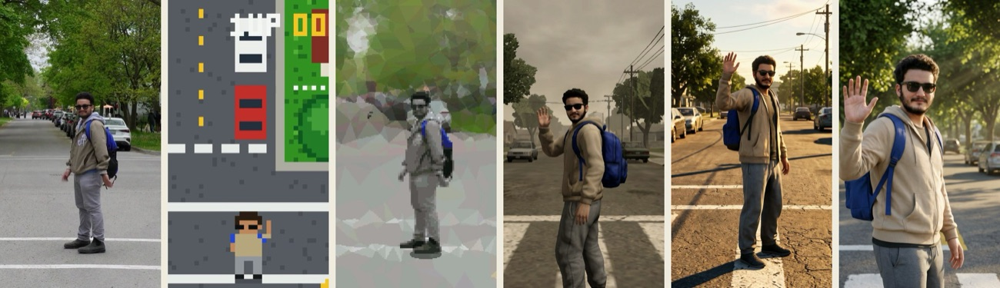
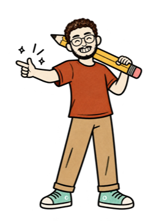
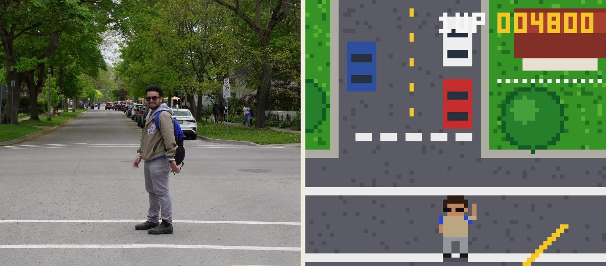
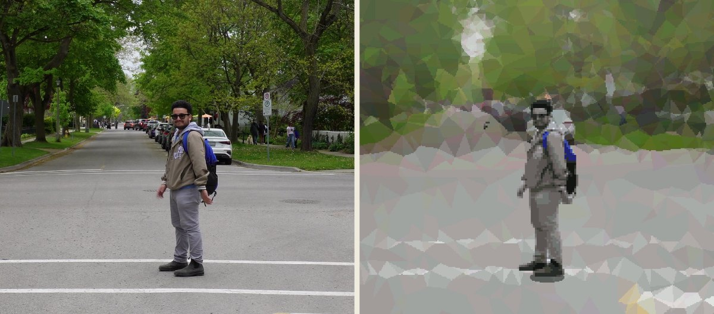
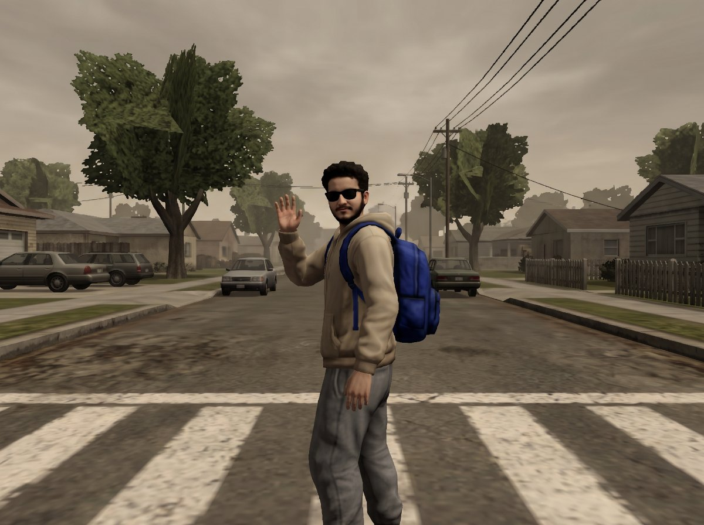
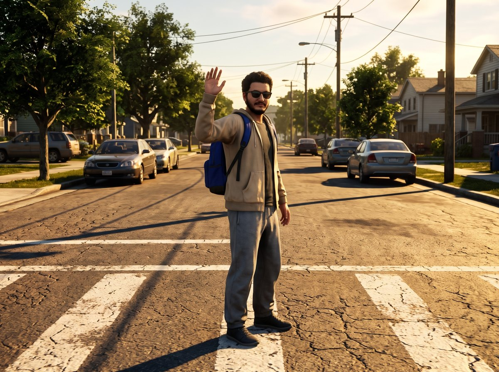

@theabhaychopra
@theabhaychopraWhat you need
- A 4-second clip of you walking across a street, on a tripod, filmed wide (I shot mine in 4K)
- One clear photo of your face: it's what keeps the AI eras looking like you
- Google Flow for the three AI eras (Nano Banana 2.1 images). On my plan these cost 0 credits
- Claude to write the code for the two code eras (any plan that runs code)

Film your 4 seconds
- Camera still, on a tripod, side-on to a street or a crosswalk
- Walk across, stop, turn and wave at the camera, walk on. The wave is the moment every era copies
- Film wide and in 4K so you can crop a square-ish window that follows you
- Grab a frame of the empty street before you walk in: the low-poly look rebuilds it
- Keep it generic. No game logos, characters or places: you're the main character
Your real clip on top, one era below, and the era changes on the word that names it. The real clip loops the whole time, so people can compare.
Attach your face photo with +, pick Image · 4:3 · Nano Banana 2.1, paste the prompt, swap in your outfit.
8-bit top-down

Ask Claude for the 8-bit version
I have a 4-second video of me walking left across a street, filmed from the side on a tripod. I stop and wave at the camera between <start> and <end> seconds. Write a Python script (numpy, Pillow, ffmpeg) that draws an 8-bit top-down version of the same 4 seconds: a 72 × 64 pixel world shown at 15× (1080 × 960), an intersection with a crosswalk, trees, roofs and parked cars in a 16-colour palette, and a 10 × 16 pixel sprite of me (<hair>, <top>, <trousers>, <bag>) that walks left with a 2-frame walk cycle, turns to face the camera and waves while I'm stopped, then walks on. The camera pans with the sprite. Move the sprite with my real x position over time: <x positions every 0.5 s>. Draw your own 3 × 5 pixel font for a small score in the top-right corner. Don't copy any real game's sprites, map or HUD. Write a 30 fps MP4.
Fill in the brackets from your own clip. My sprite stops and waves exactly when I do, because it uses my real position.

Early-2000s low-poly
Ask Claude for the low-poly version
Write a Python script (OpenCV, numpy, ffmpeg) that gives my 4-second street clip an early-2000s 3D game look. 1) Take one frame of the empty street (before I walk in) and rebuild it as flat-shaded triangles: Delaunay over strong corners, points on the edges and a jittered grid; fill each triangle with its average colour; 15-bit colour; light distance fog toward the horizon. 2) Cut me out of every frame with a person mask (<mask file>). Drop my texture to half resolution, smooth it with a bilateral filter and snap it to a 12-colour palette taken from my own pixels, so I look like a low-poly character. 3) Add a round blob shadow under my feet. 4) Render everything at 360 × 320 with no anti-aliasing and scale it up 3× with nearest-neighbour. Write a 30 fps MP4.
For the person mask, any background remover works. Mine uses Apple Vision on a Mac.

2008 gritty
A screenshot-style frame from a generic late-2000s (2008) open-world video game, third-person camera at street level: the person in the attached photo (keep their exact face, hair, beard, natural face width and skin) wearing <your outfit, e.g. dark sunglasses, a beige zip-up hoodie, grey joggers and a blue backpack>, standing on a white-lined crosswalk in the middle of a quiet suburban street lined with big green trees and parked cars, turned toward the camera and waving with their right hand, full body in frame. Late-2000s console graphics: heavy brown-grey colour filter, washed-out desaturated colours, strong bloom on the sky, low-resolution muddy textures, slightly blurry, chunky low-detail trees, aliased edges, flat lighting, a hazy grey-brown sky. Original art, not any real game: no HUD, no text, no logos, no characters or places from any existing game.

2013 HD
A screenshot-style frame from a generic early-2010s (2013) HD open-world video game, third-person camera at street level: the person in the attached photo (keep their exact face, hair, beard, natural face width and skin) wearing <your outfit, e.g. dark sunglasses, a beige zip-up hoodie, grey joggers and a blue backpack>, standing on a white-lined crosswalk in the middle of a quiet suburban street lined with big green trees and parked cars, turned toward the camera and waving with their right hand, full body in frame. Early-2010s HD console graphics: crisp sharp textures, bright saturated warm afternoon sun, deep blue sky, glossy reflective asphalt with strong specular highlights, high contrast, punchy colours, slightly plastic smooth skin shading, clean shadows, sharp but game-like character model. Original art, not any real game: no HUD, no text, no logos, no characters or places from any existing game.

2026 next-gen
A frame from a generic 2026 next-generation open-world video game, third-person camera at street level, medium shot from the knees up: the person in the attached photo (keep their exact face, hair, beard, natural face width and skin) wearing <your outfit, e.g. dark sunglasses, a beige zip-up hoodie, grey joggers and a blue backpack>, standing on a white-lined crosswalk in the middle of a quiet suburban street lined with big green trees and parked cars, turned toward the camera and waving with their right hand. Photoreal next-gen game render: path-traced global illumination, soft golden-hour sunlight through the leaves, volumetric light, ultra-detailed skin with visible pores and individual hairs, realistic fabric weave, reflections in the sunglasses, subtle cinematic depth of field, film-like colour. It should look almost real but still like a game engine render. Original art, not any real game: no HUD, no text, no logos, no characters or places from any existing game.
Put the reel together
- Split the frame: real clip in the top half, the era in the bottom half, a thin line between
- Loop the real 4 seconds under everything. Keep the two code eras in step with it, frame for frame
- Move the stills: a slow pan on 2008, a slow push on 2013, and a push-in to your face on 2026 that's tightest on the word "pores"
- Change the era on the word that names it, and flash all five on "five times"
- End on all five in a row and ask which era is theirs: that's the comment
I kept the three AI eras as stills with camera moves: 0 credits. To make them move, animate each still in Flow video or Kling, which costs credits per shot.
What it cost me
The voice in the reel is my own AI voice clone (ElevenLabs). The three AI eras are Google Flow images made from my photo. This is original art inspired by the GTA 6 launch, not affiliated with Rockstar Games.
- Google Flowlabs.google
- Claudeclaude.ai

One clip, every era
Every prompt here is the one I ran for the reel, word for word. Tell me which era you made.